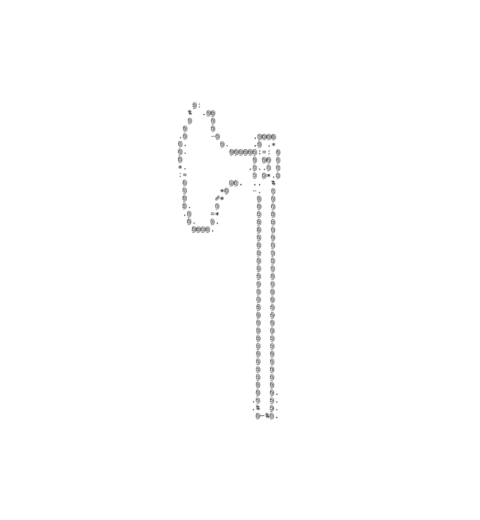
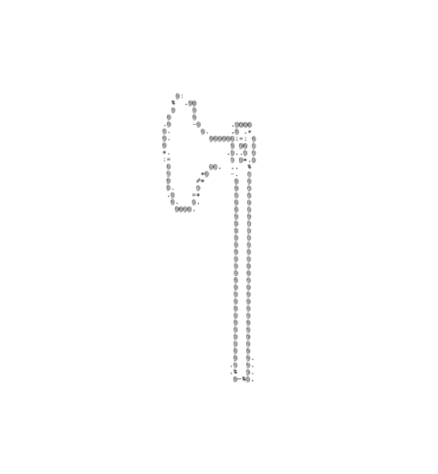

60s–70s Collection
Explore My Collection

Kewpie Baby Doll
1960s Kewpie Baby made in Taiwan.

Kewpie Baby Doll
1960s larger Kewpie baby made in Taiwan.

Kewpie Baby Doll
1960s small Kewpie baby with squeaker. Made in Taiwan.

Ceramic Doe and Fawn Planter
70s Shafford planter made in Japan.

Pink Nightgown
1960s nightgown with no tag.
Kim Casali Beer Mug
1971 mug by the Los Angeles Times. Illustration by Kim Casali.

Kim Casali Dish
1972 dish by the Los Angeles Times. Illustration by Kim Casali.

Ceramic Dogs
1973 Lefton (maybe) ceramics.

Apricot & Hops A Lot Bunny
1979 Strawberry Shortcake Doll.

German Weather House
1970s working weather house by German brand 'Bambi'.

Folk Art Matchbox
1963 matchbox by Ohio Blue Tip.

Gunne Sax Skirt
1970s Jessica McClintock Gunne Sax skirt.